Der findes ikke én regel for, hvornår AI må bruges. Det afhænger af opgaven, faget og din lærers vurdering (Børne- og Undervisningsministeriet, 2025).
Er du i tvivl, er det bedste, du kan gøre, at spørge, før du går i gang, i stedet for at undskylde bagefter. De fleste lærere vil hellere svare på spørgsmålet end opdage det, efter opgaven er afleveret.
TipVær åben om, hvordan du bruger AI til din egen læring, også over for din lærer. Det skaber tillid i stedet for mistænksomhed.
Kilder
- Børne- og Undervisningsministeriet (2025). Anbefalinger om brug af generativ AI i undervisningen i folkeskolen. Styrelsen for Undervisning og Kvalitet. https://uvm.dk/aktuelt/nyheder/2025/juni/250626-offentliggoerelse-af-anbefalinger-om-brug-af-generativ-ai-i-undervisningen-i-folkeskolen/